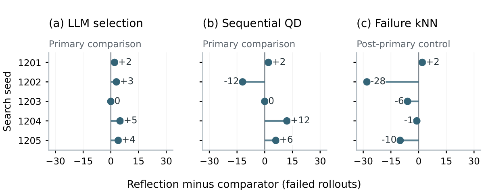

TL;DR
When searching for failures of a frozen ACT robot policy, structured reflection finds slightly more failures than matched language-guided selection, but a cheap nearest-neighbor selector finds more, in about half the time and with no model calls.
Abstract
We measure failed rollouts and the resource cost of structured reflection for a frozen Action Chunking with Transformers (ACT) policy in MuJoCo bimanual cube transfer. Five primary methods and three post-primary controls each use five search seeds and 64 rollouts per run. In a retrospective analysis, reflection averages 20.4 failures versus 17.6 for otherwise matched language-guided selection: a paired difference of 2.8 +/- 1.92 (sample standard deviation), with 25.6% more measured time and 6.85% more tokens. The comparison with inexpensive search is less favorable. Sequential QD averages 18.8 failures; a subsequently frozen nearest-neighbor selector using past failure labels averages 29.0 +/- 12.49, with 166.1 s/run and no model calls, versus 315.8 s/run for reflection. All 140 repeat executions of 70 unique primary archive scenes remain failures. These observations show that an increment over language selection need not justify reflection's cost against inexpensive alternatives. They do not establish statistical superiority, cross-task generalization, or improved policy robustness.
Results

Paper
Download PDF (12 pages)
BibTeX
@inproceedings{ma2026measuring,
title = {Measuring Failure Yield and Reflection Cost in a Frozen Robot Policy},
author = {Qinzhen Ma and Shichen Tang and Qingxi Meng and Jialin Wu},
booktitle = {NeurIPS 2026 Workshop on Self-Evolving Diversity-Driven Search for Robust AI Systems},
year = {2026}
}